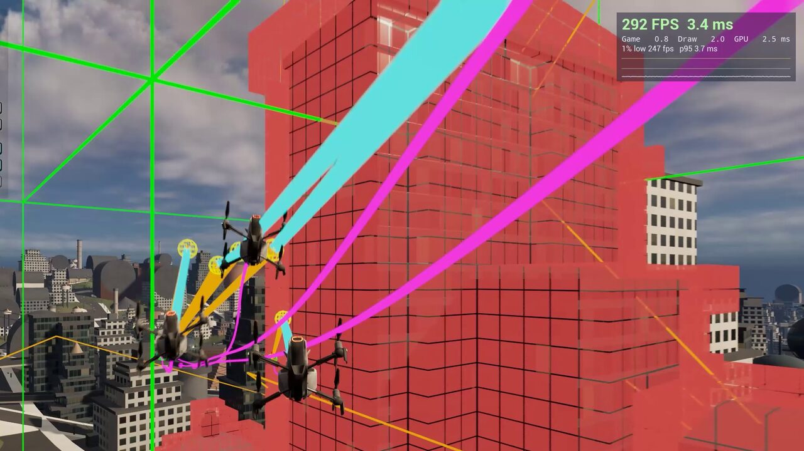
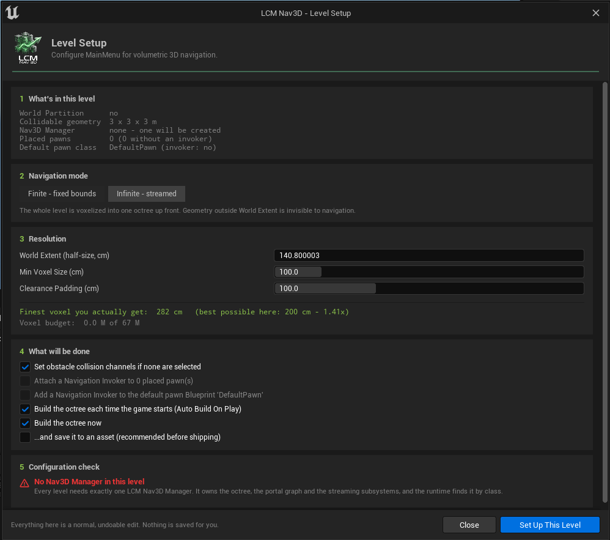

LCM Nav3D: Documentation

Stuck, or want to talk to the author? → Discord: discord.gg/nXkpD6uaBG. Verify your purchase in
#get-helpfor direct support, bug tracking and early builds. More UEDEV plugins and resources: uedevlabs.github.io. Want to try it before buying? The free playable demo is a standalone Windows build of the demo levels, and buyers get 57 demo levels free from inside the editor (LCM Nav3D menu > Get the Demo Levels). You can also read everything here as a PDF: the full manual and the quick start.
What it does
LCM Nav3D is a 3D navigation plugin for Unreal Engine. It builds a sparse voxel octree of the empty space in your level and finds paths through it, so flying and swimming agents can go anywhere there is room for them. You get the full C++ source and every feature is available in Blueprint. Here is what is in it:
| Area | Details |
|---|---|
| GPU builds | Voxelization, the octree and its links are built on the GPU (D3D12, D3D11, Vulkan). Each machine tests its GPU's voxels first. If the GPU fails that test, the plugin voxelizes on the CPU for the rest of the session. A GPU path solver is still experimental and will come in a later free update |
| Per-agent cost areas | Mark storms, preferred lanes, toll gates and no-fly zones with volumes and the stock NavArea classes. All the planners take them into account, and a stock Navigation Query Filter lets two agents treat the same volume differently. See Cost areas |
| Crowds | 10,000+ agents through Mass Entity, with LOD-culled rendering. For comparison, an actor-based AI agent with a controller, movement component and behaviour tree costs about 50 µs per tick |
| Async pathfinding | Path requests run off the game thread and call you back when they finish |
| Frame budget | Budget settings for the per-frame work. Dynamic-obstacle updates are batched
into one window (r.LcmNav.DynObs.CoalesceMs, 33 ms by default)
so the octree is not rebuilt on every single change |
| Memory | The octree is sparse. Memory depends on how much geometry your level has, and open sky takes up very little |
| Determinism | The same input gives the same path. Replays, lockstep multiplayer and automated tests all depend on that |
| Large worlds | World Partition and streaming are supported. You can bake navigation, and a coarse skeleton handles long-range routes before the detailed chunks have loaded |
| Debugging | A health check lists anything that would stop agents moving. An auto-tuner tries voxel settings on your own routes and ranks them. There is also a Gameplay Debugger category (about 10 µs) |
It runs on Unreal Engine 5.2 to 5.8, on Windows, macOS, Linux, Android, iOS, PlayStation 5 and Xbox Series X|S. Each feature above has its own chapter. If you are new, start with Core Concepts. If you are not sure you need 3D navigation at all, read Nav3D vs Recast first.
Start here
New in 3.6.0: Fly To predicts moving obstacles and times its pass, a new Obstacle Gauntlet demo with 42 movers, GPU voxelization that checks itself on each machine, and fish that swim, turn and school like fish. See What's new in 3.6.
→ LCM_Nav3D_QuickStart.pdf (13 pages). It covers installing the plugin, the five settings you need to know, and getting a pawn flying in your own level. It takes about 45 minutes. Most people only need to read this one from start to finish.
Use the rest when you need it:
| If you want to... | Open | Size |
|---|---|---|
| Get running | LCM_Nav3D_QuickStart.pdf | 13 pp |
| Read up on one topic | The chapter pages in the sidebar (one page per document) | 1-18 pp each |
| Look something up | LCM_Nav3D_Manual.pdf (everything, with bookmarks and search) | 165 pp |
This site and the PDFs are made from the same source files, so they say the same thing.
See it running
You can see all of these features in the free demo levels and in these videos:
- Showcase trailer and technical trailer
- By use case: flying AI and drones, underwater and fish AI, space combat, open worlds, Mass Entity crowds and moving obstacles
- Feature Examples: eight walk-through levels with 69 single-feature displays that check themselves
The editor tools, at a glance
Everything below lives behind the Nav3D button in the Level Editor toolbar. Use this table to find which chapter covers a panel.
| Panel | What it is for | Documented in | |
|---|---|---|---|
 |
Setup Wizard | Configure a level from nothing, in one page | Editor Tools |
 |
Health Check | Anything that would stop agents moving, with a Fix button per row | Editor Tools |
 |
Auto-Tuner | Measure candidate voxel settings against your real routes and rank them | Editor Tools |
 |
Manager panel | Every navigation setting, plus what those settings resolve to | Settings Reference |
Building an agent
| Approach | Best for | Tutorial | |
|---|---|---|---|
 |
Behavior Tree | Most projects. The familiar route. | 03: Your First Flying Agent |
 |
StateTree | State-driven behaviour, data binding instead of a blackboard | 04: The Same Agent in StateTree |
 |
Mass Entity | 10,000+ agents through the ECS | 06: Mass Entity Crowds |
 |
Tactical EQS | Queries that score real volume, not a floor plane | 07: Tactical EQS in True 3D |
Part I: Getting Started
| # | Document | What it covers |
|---|---|---|
| 01 | Installation | Getting the plugin into your project and proving the install is good |
| 02 | Core Concepts | What the navigation manager does, and the settings that decide whether it works well |
| 03 | Your First Flying Agent | A pawn that flies through 3D space to a goal, in your own level |
| 04 | The Same Agent in StateTree | The StateTree route to identical flight behaviour |
| 05 | Dynamic Obstacles | Making the world move underneath your agents |
| FE | Feature Examples | Eight walk-through levels, one feature per display, each naming the chapter to read |
Part II: Going Further
| # | Document | What it covers |
|---|---|---|
| 06 | Mass Entity Crowds | 10,000+ agents pathfound through the Mass ECS |
| 07 | Tactical EQS in True 3D | Environment queries that score real volume, not a floor plane |
| 08 | AI Perception | Stock UE perception wired into volumetric threat tracking and cover |
| 09 | Hybrid Recast + LCM Nav3D | Walking agents on Recast and flying agents on the SVO, in one level |
| 10 | Nav Links and Area Modifiers | Traversal shortcuts, and regions agents should avoid or prefer |
| 11 | The Gameplay Debugger | Reading agent and plugin state live in PIE |
| 12 | Small Worlds | A true 1 cm leaf for aquariums and other centimetre-scale volumes, at 100:1 or with the Small world-scale profile |
| 13 | Fly To Location Node | One Blueprint node that flies a pawn to a point or an actor, with no AI Controller |
| 14 | Stock Move To and EQS | Making Unreal's own Move To, AI Move To and EQS plan through LCM Nav3D |
| 15 | Behaviour Nodes | Engage, Investigate, Flee, Scan Area, Perch, Land and Take Off for BT, StateTree and Mass |
Chapter 12: Behaviour Tree stock patterns
Seven jobs the engine already does well, and where an LCM Nav3D node earns its place instead:
| # | Document |
|---|---|
| 1 | Wait |
| 2 | IsAtLocation |
| 3 | LookAt |
| 4 | TurnInPlace |
| 5 | HealthBelow |
| 6 | PerceptionRelay |
| 7 | MemoryDecay |
Part III: Reference
| # | Document | What it covers |
|---|---|---|
| 13 | Settings Reference | Every field on the navigation manager, with verified defaults and limits |
| 14 | Troubleshooting | Problems in the order people actually hit them |
| 15 | Flight and Swim Locomotion | The 6-DOF dynamics layer that turns guidance into believable movement |
| 16 | Mass Trait Reference | Every Mass Entity trait, and the one rule you must not break |
Part IV: Appendix
| # | Document | What it covers |
|---|---|---|
| 17 | API Reference | Everything you can reach from Blueprint, the Details panel, a Behaviour Tree, a StateTree or a Mass config |
Demo maps
The worked examples referred to throughout live in the plugin's
Content/Demo/ folder, grouped by Behaviour Tree, StateTree
and Mass Entity. Content/Demo/MainMenu is a gallery that
opens any of them. Enable Show Plugin Content in the
Content Browser to see them.